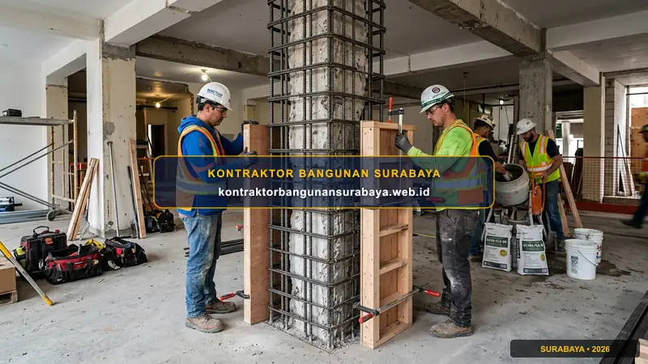

1. Cara Memperkuat Struktur Rumah Lama Sebelum Menambah Lantai
Bagaimana cara memperkuat struktur rumah lama sebelum menambah lantai?
Memperkuat struktur rumah lama sebelum menambah lantai melibatkan evaluasi kapasitas pondasi dan kolom eksisting, penambahan kolom praktis atau perkuatan dengan metode jacketing apabila diperlukan, serta memastikan perhitungan beban tambahan sesuai standar struktur yang berlaku. kontraktorbangunansurabaya.web.id membantu pemilik rumah di Surabaya menilai kelayakan struktur sebelum memutuskan menambah lantai pada bangunan lama.
Menambah lantai pada hunian lama merupakan alternatif populer untuk memperluas ruang tinggal tanpa harus membeli lahan baru. Namun, risiko kegagalan struktur seperti retak geser, penurunan tanah tidak merata (differential settlement), hingga amblasnya pondasi dapat terjadi apabila pekerjaan peningkatan lantai dilakukan tanpa audit teknis yang memadai.
Pentingnya Audit Sebelum Konstruksi
Setiap proses peningkatan lantai wajib diawali dengan peninjauan daya dukung struktur melalui layanan jasa renovasi dan tambah lantai rumah profesional.
2. Evaluasi Kapasitas Pondasi dan Kolom Eksisting Terlebih Dahulu
Sebelum menambah lantai, evaluasi struktur perlu memastikan apakah pondasi dan kolom yang ada saat ini dirancang dengan kapasitas cadangan yang cukup untuk menahan beban tambahan, karena banyak rumah lama yang awalnya hanya dirancang untuk satu lantai tanpa mempertimbangkan kemungkinan penambahan di masa depan.
Pemeriksaan gambar kerja atau dokumen asli bangunan, apabila masih tersimpan, juga membantu tim struktur memahami spesifikasi awal pondasi dan tulangan yang digunakan, sehingga evaluasi kapasitas dapat dilakukan lebih akurat dibanding hanya mengandalkan pengamatan visual semata.
| Tahapan Evaluasi Struktur | Metode Pengujian / Pengecekan | Tujuan & Manfaat Teknis |
|---|---|---|
| Audit Dokumen Asli (As-Built) | Pemeriksaan gambar DED & pembesian lama | Mengetahui dimensi foot plate, kedalaman tiang, dan mutu beton awal |
| Uji Mutu Beton Eksisting | Hammer test / Rebound hammer non-destruktif | Memperkirakan kuat tekan beton (f'c) yang tersisa pada kolom utama |
| Uji Daya Dukung Tanah | Uji sondir (CPT) & hand boring | Mengetahui kedalaman tanah keras dan daya dukung tanah dasar di Surabaya |
| Analisa Beban Struktur | Simulasi software rekayasa struktur sipil | Memastikan rasio tegangan kolom dan balok aman terhadap beban gempa & lantai 2 |
Pengujian sederhana seperti hammer test pada kolom beton eksisting dapat membantu memperkirakan kekuatan tekan beton yang tersisa, meski untuk keputusan akhir tetap diperlukan perhitungan struktur oleh insinyur sipil berpengalaman.
Uji sondir atau uji tanah tambahan juga terkadang diperlukan apabila penambahan lantai cukup signifikan, guna memastikan daya dukung tanah di bawah pondasi masih memadai untuk menahan beban total bangunan setelah penambahan lantai baru.
3. Metode Perkuatan Struktur: Jacketing dan Penambahan Kolom Praktis
Metode jacketing, yaitu memperkuat kolom eksisting dengan menambahkan lapisan beton atau baja di sekelilingnya, menjadi salah satu solusi umum ketika kolom yang ada dinilai belum cukup kuat menahan beban tambahan dari lantai baru di atasnya.

Penambahan kolom praktis pada titik-titik tertentu juga bisa menjadi solusi alternatif untuk mendistribusikan beban tambahan secara lebih merata, terutama pada bagian bangunan yang akan menerima beban signifikan dari struktur lantai atas yang baru.
Keunggulan Metode Jacketing
- Meningkatkan Kuat Tekan: Menambah kapasitas pikul beban aksial kolom hingga 50-80%.
- Memperbaiki Daktilitas: Memberikan ketahanan lebih baik terhadap pergerakan dan beban geser lateral.
- Tanpa Membongkar Kolom Lama: Meminimalkan gangguan pada area interior ruangan lantai 1.
- Integrasi Monolitik: Menggunakan bonding agent dan anchoring rebar berkualitas tinggi.
Strategi Distribusi Beban
- Suntik Pondasi Cakar Ayam: Penambahan pondasi setempat pada titik kolom baru.
- Penambahan Kolom Praktis: Mengurangi bentang bebas dinding dan balok penopang.
- Balok Ring Terintegrasi: Mengikat seluruh kolom atas agar menyatu sempurna.
- Rangka Lantai Baja Ringan / Hebel: Alternatif ringan untuk meminimalisir beban mati dak.
Penggunaan material struktur atas yang lebih ringan, seperti baja ringan untuk rangka lantai tambahan, juga bisa menjadi strategi untuk mengurangi beban tambahan pada struktur eksisting, dibanding menggunakan material beton konvensional yang lebih berat.
Pada proyek peremajaan hunian, koordinasi dengan tim perencana desain arsitektur dan RAB akan membantu menentukan apakah sistem pelat beton konvensional, bondek cor, atau baja profil WF yang paling efisien diterapkan pada denah rumah Anda.
4. Perencanaan Penambahan Lantai yang Aman Bersama kontraktorbangunansurabaya.web.id
Selain aspek struktural, penambahan lantai juga perlu memperhitungkan ulang kapasitas tangga, akses evakuasi, dan sistem utilitas seperti listrik dan air agar tetap memadai untuk melayani kebutuhan tambahan lantai baru tersebut.
kontraktorbangunansurabaya.web.id melakukan evaluasi menyeluruh terhadap struktur eksisting sebelum merencanakan penambahan lantai, memastikan solusi perkuatan yang diterapkan sesuai dengan kondisi bangunan dan kebutuhan beban tambahan yang direncanakan.
Standar Audit Struktur Rumah Lama Kami di Surabaya:
- Inspeksi Visual & Cek Retak: Analisa menyeluruh pola retakan rambut, lentur, hingga retak struktural pada pondasi eksisting.
- Perhitungan Kapasitas Cadangan: Kalkulasi matematis daya dukung pondasi batu kali, foot plate, dan kolom beton eksisting.
- Rencana Perkuatan Bertahap: Penentuan titik suntik pondasi, penambahan kolom baja/beton, dan metode jacketing presisi.
- Garansi Struktur Resmi: Pelaksanaan renovasi dilindungi kontrak SPK jelas dan sertifikat garansi pemeliharaan.
Perkuatan struktur ini idealnya dilakukan sebagai bagian dari audit menyeluruh sebelum renovasi. Baca kembali panduan mengenai jasa renovasi rumah surabaya yang membahas audit struktur bangunan lama secara lebih lengkap.
Konsultasi Teknis & Survey Struktur Lapangan
Diskusikan rencana tambah lantai rumah Anda bersama tim ahli sipil kami untuk mendapatkan evaluasi struktur awal yang akurat, aman, dan efisien dari segi anggaran.
5. FAQ Seputar Memperkuat Struktur Rumah Lama Sebelum Tambah Lantai
6. Konsultasi Gratis Sekarang
Ingin berdiskusi lebih lanjut mengenai kebutuhan konstruksi bangunan Anda di Surabaya? Hubungi tim kami melalui WhatsApp di 0889-8964-3555 untuk konsultasi awal tanpa biaya bersama kontraktorbangunansurabaya.web.id.
Konsultasi WhatsApp di 0889-8964-3555Reza Maulana Nehru
Praktisi & Penulis Edukasi Konstruksi Bangunan di Kontraktor Bangunan Surabaya. Berfokus pada analisa kekuatan struktur sipil, renovasi dan penambahan lantai rumah, estimasi biaya RAB, dan standarisasi mutu pelaksanaan proyek di Surabaya dan sekitarnya.